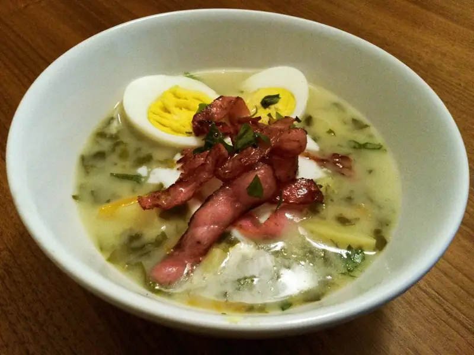

Фото: Mariusz Zuberski, CC BY-SA 4.0
.jpg){kind=link}
Зелёный борщ со шпинатом
Весенний суп на курином бульоне со шпинатом, варёным яйцом и сметаной
80 мин6 порц.349 ккал на порциюБ 27 · Ж 18 · У 19Украинская кухня
Продукты на 6 порц.
- Куриные голени6 шт
- Вода2,5 л
- Картофель4 шт
- Лук репчатый1 шт
- Морковь1 шт
- Шпинат400 г
- Лимон0,5 шт
- Яйцо куриное4 шт
- Укроп0,5 пучок
- Зелёный лук0,5 пучок
- Лавровый лист1 шт
- Соль2 ч. л.
- Перец чёрный молотый1 щеп.
- Сметана 20%4 ст. л.
Как готовить
- Курицу залейте холодной водой, доведите до кипения на сильном огне, снимите пену и варите на слабом огне 40 минут.
- Яйца сварите вкрутую 10 минут, остудите в холодной воде и очистите.
- Выньте курицу, отделите мясо от костей. В бульон положите картофель кубиками, тёртую морковь и мелко нарезанный лук, посолите, варите 15 минут.
- Добавьте нарезанный шпинат, сок половины лимона и лавровый лист, варите 3 минуты.
- Верните мясо, всыпьте рубленые укроп и зелёный лук, поперчите и выключите огонь.
- Подавайте с половинками или кубиками яйца и ложкой сметаны в каждой тарелке.
Совет. Классический зелёный борщ варят со щавелем: возьмите 300 г щавеля вместо шпината и не добавляйте лимон. Шпинат сам по себе не кислый, поэтому без лимона вкус будет пресным.